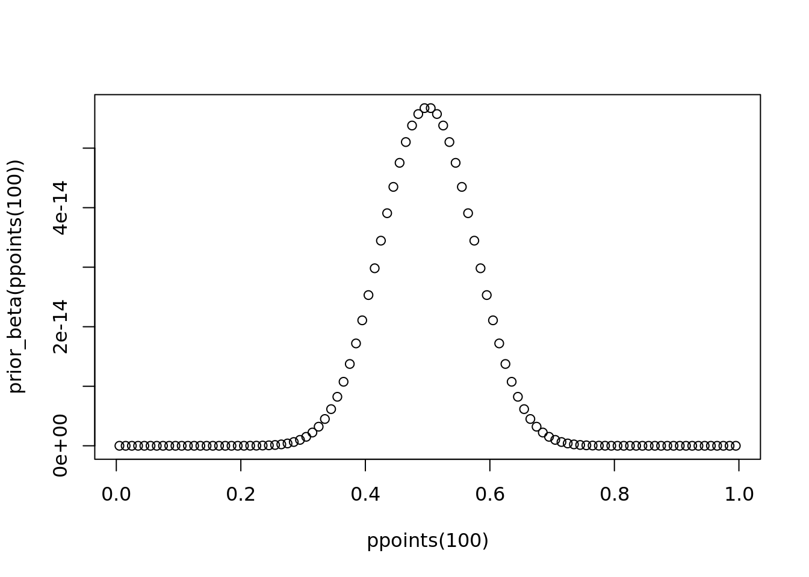
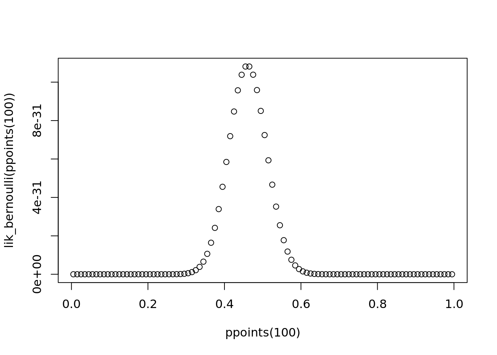
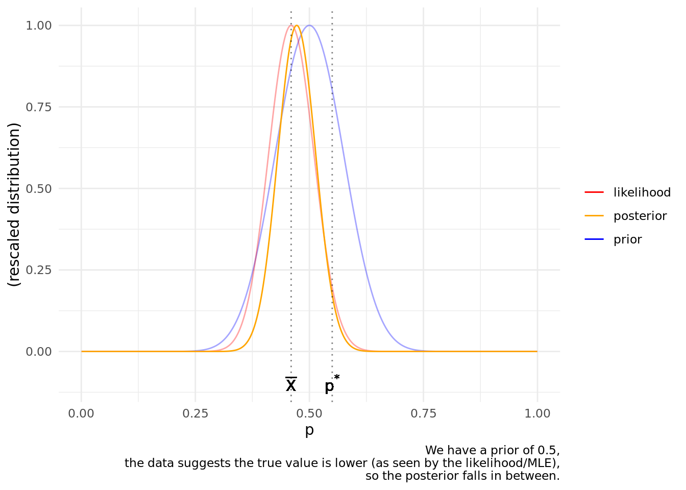
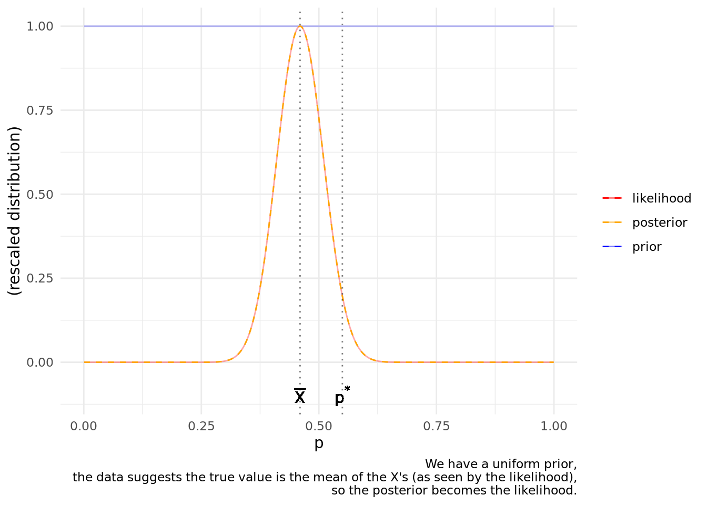
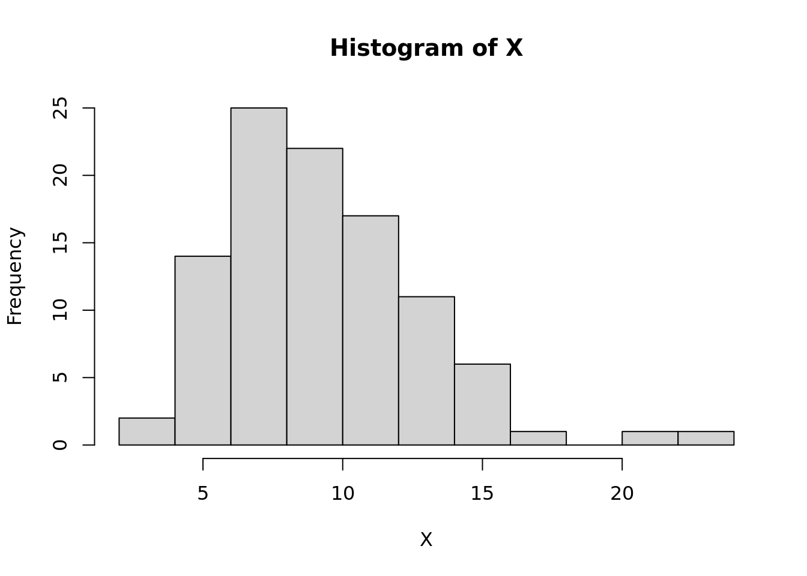
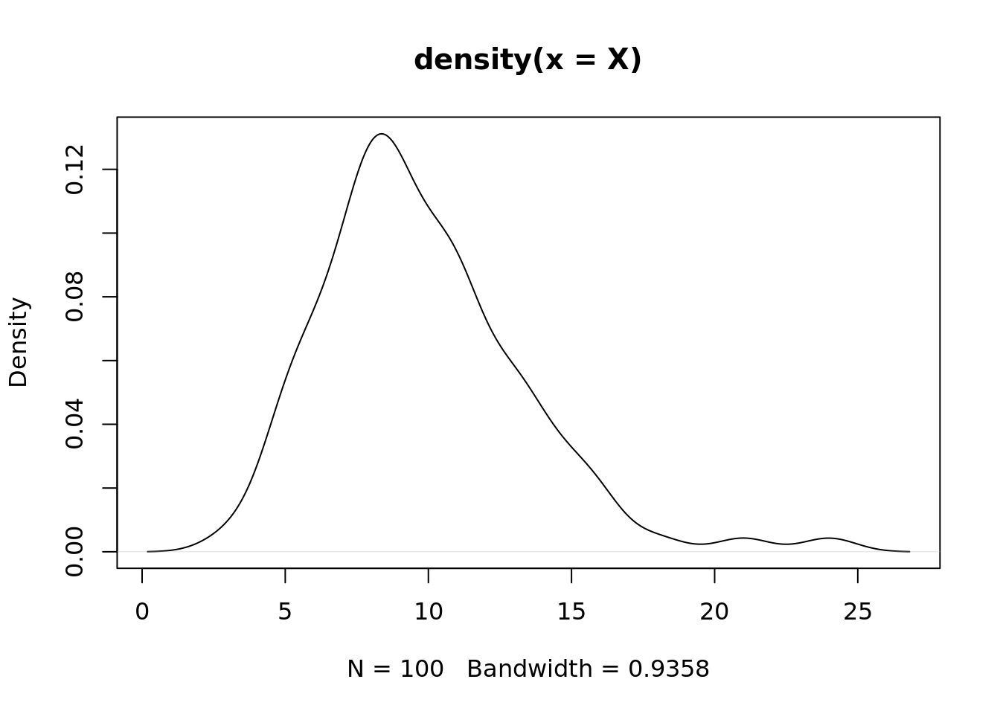
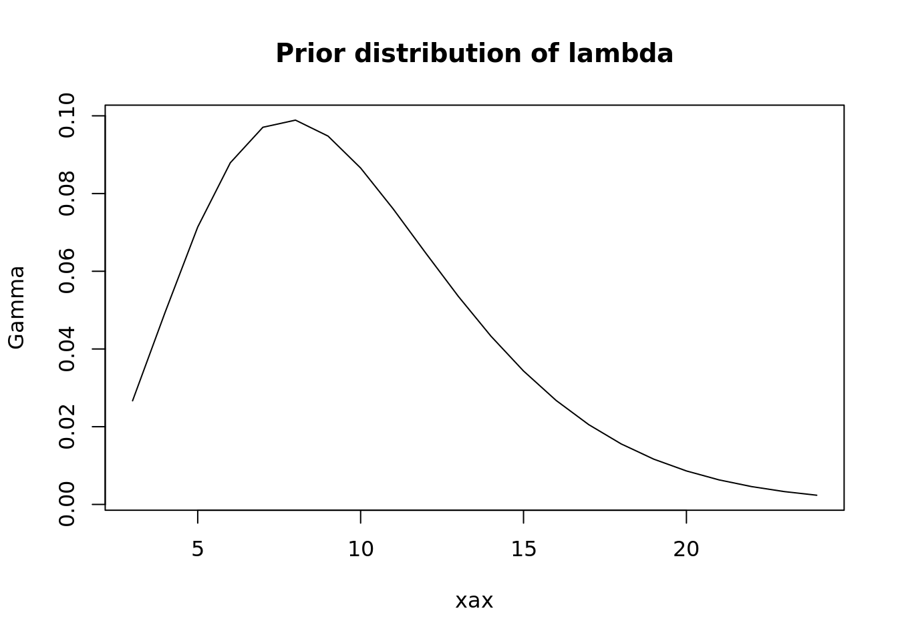
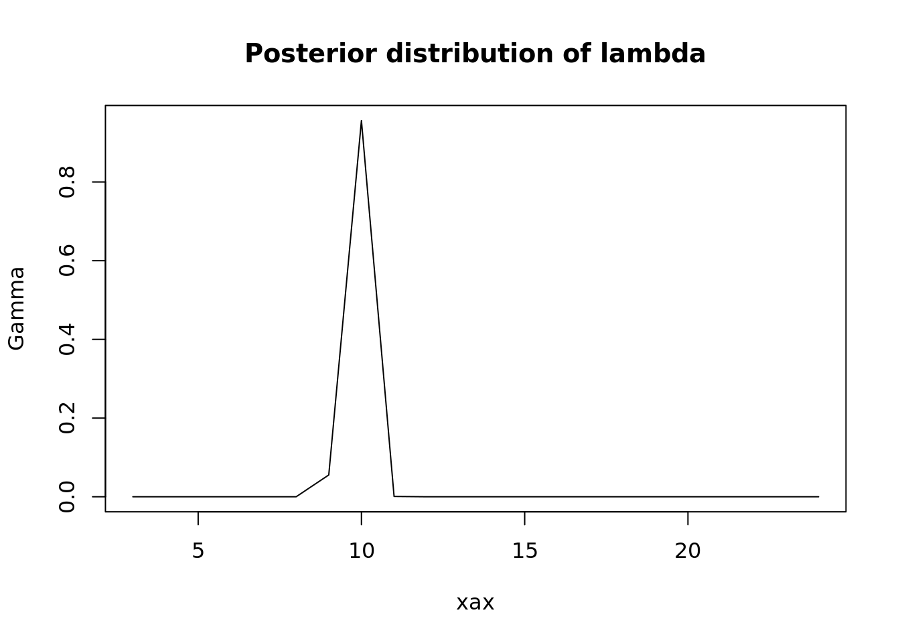
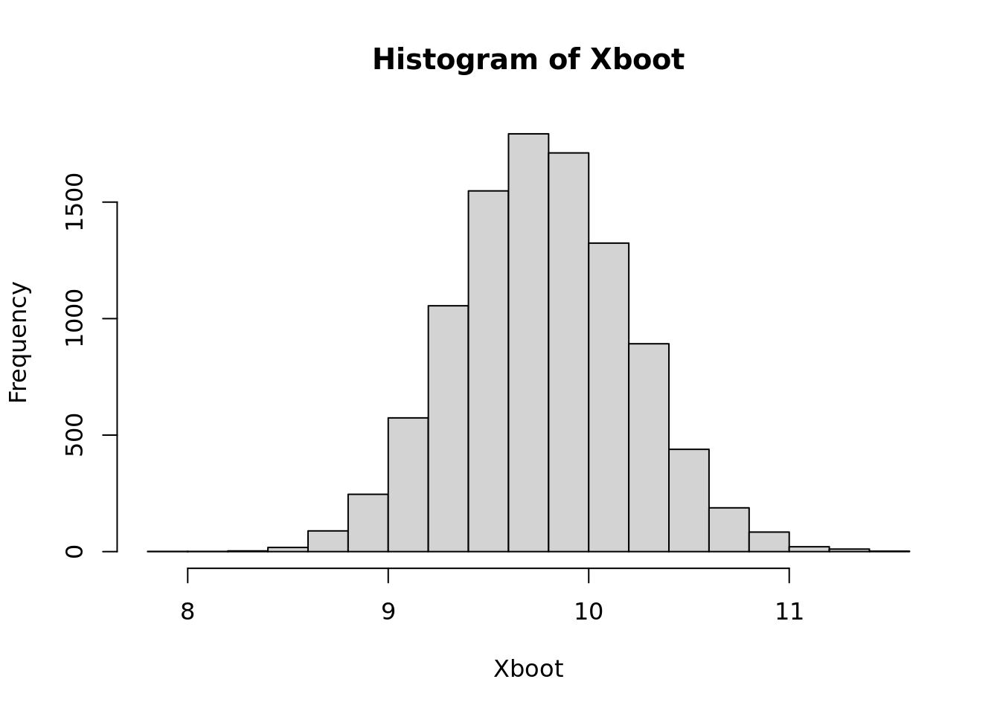

pacman::p_load(
ggplot2
)
init_rescaler <- function(...) {
vals <- unlist(list(...))
a <- min(vals)
b_a <- max(vals) - a
if (b_a == 0)
stop("Only one value supplied. At least 2 unique values needed.")
rm(vals)
# a + (b-a) * (x - min(x))/(max(x) - min(x)) --> [a,b]
function(x) {
minx <- min(x)
maxx <- max(x)
if (minx == maxx)
return(x)
return(a + b_a * (x - minx) / (maxx - minx))
}
}
rescale_prob <- init_rescaler(c(0,1))
set.seed(1614)Bayesian Statistics
# Example from the lecture
# - what is the proportion of the world's population that is female?
# - we assume it's probably about 0.5 - that informs our prior
# gen some Bernoulli data - assume true p is actually 0.55
n <- 100
ptrue <- 0.55 # true parameter p
X <- rbinom(n, size = 1, p = ptrue)
# Use a Beta(a, b) prior, which has mean 0.5 if a=b (since E[X] = a / (a + b))
a <- sample.int(100, 1)
b <- a
# Bayes estimation of posterior distribution
# prior dist of p proportional to:
prior_beta <- \(p) p^(a - 1) * (1-p)^(b - 1)
plot(ppoints(100), prior_beta(ppoints(100)))
# Likelihood of p, given the model of X as Bernoulli r.v. (i.e., joint PMF)
lik_bernoulli <- \(p) p^sum(X) * (1 - p)^(n - sum(X))
plot(ppoints(100), lik_bernoulli(ppoints(100)))
# posterior dist of p
# - has distribution Beta(a + sum(X), b + n - sum(X))
.post_beta <- \(p) dbeta(p, a + sum(X), b + n - sum(X))
plot(ppoints(100), .post_beta(ppoints(100)))
# which is prop to:
post_beta <- \(p) p^(a - 1 + sum(X)) * (1 - p)^(a - 1 + n - sum(X))
# (for consistency, using hand-computed equation instead of dbeta)
# use these functions to draw prior, likelihood, and posterior density curves
d <- data.frame(p = ppoints(1000))
d$prior <- prior_beta(d$p)
d$lik <- lik_bernoulli(d$p)
d$post <- post_beta(d$p)
ggplot(d, aes(x = p)) +
geom_line(aes(y = rescale_prob(prior), color = "prior"), alpha = 0.35) +
geom_line(aes(y = rescale_prob(lik), color = "likelihood"), alpha = 0.35) +
geom_line(aes(y = rescale_prob(post), color = "posterior"), alpha = 1) +
geom_vline(xintercept = mean(X), linetype = 3, alpha = 0.5) +
geom_text(aes(x = mean(X), y = -0.1), label = "bar(X)", parse = TRUE) +
geom_vline(xintercept = ptrue, linetype = 3, alpha = 0.5) +
geom_text(aes(x = ptrue, y = -0.1), label = "p^`*`", parse = TRUE) +
scale_color_manual(values = c(prior = "blue",
likelihood = "red",
posterior = "orange")) +
labs(y = "(rescaled distribution)",
caption = "We have a prior of 0.5,\nthe data suggests the true value is lower (as seen by the likelihood/MLE),\nso the posterior falls in between.",
color = "") +
theme_minimal()
# what if we used a uniform prior?
d$prior_unif <- rep_len(1, nrow(d))
# posterior distribution is prop to likelihood
post_beta2 <- \(p) p^sum(X) * (1-p)^(n - sum(X))
d$post2 <- post_beta2(d$p)
ggplot(d, aes(x = p)) +
geom_line(aes(y = rescale_prob(prior_unif), color = "prior"), alpha = 0.25) +
geom_line(aes(y = rescale_prob(lik), color = "likelihood"), alpha = 0.35) +
geom_line(aes(y = rescale_prob(post2), color = "posterior"),
alpha = 1, linetype = 2) +
geom_vline(xintercept = mean(X), linetype = 3, alpha = 0.5) +
geom_text(aes(x = mean(X), y = -0.1), label = "bar(X)", parse = TRUE) +
geom_vline(xintercept = ptrue, linetype = 3, alpha = 0.5) +
geom_text(aes(x = ptrue, y = -0.1), label = "p^`*`", parse = TRUE) +
scale_color_manual(values = c(prior = "blue",
likelihood = "red",
posterior = "orange")) +
labs(y = "(rescaled distribution)",
caption = "We have a uniform prior,\nthe data suggests the true value is the mean of the X's (as seen by the likelihood),\nso the posterior becomes the likelihood.",
color = "") +
theme_minimal()
Another example - modeling Poisson distributed data with a Gamma prior
- https://people.stat.sc.edu/hitchcock/slides535day5spr2014.pdf
Say \(X \sim Poisson(\lambda)\)
The likelihood function:
\(p_n(X_1,...,X_n | \lambda) = \Pi_{i=1}^n ~ \frac{e^{-\lambda} \lambda^{X_i}}{X_i !}\)
The \(Gamma(\alpha, \beta)\) prior is:
\(\pi(\lambda) = \frac{\beta^\alpha}{\Gamma(\alpha)} \lambda^{\alpha-1} e^{-\beta \lambda}, ~~~ \lambda > 0\)
- Assumes specification of \(Gamma\) as \(\alpha\) = shape, \(\beta\) = rate, so that \(E[Gamma] = \alpha/\beta\)
The posterior:
\(\pi(\lambda | X_1,...,X_n) = \lambda^{\Sigma_{i=1}^n ~X_i + \alpha - 1} e^{-(n + \beta)\lambda}, ~~~ \lambda > 0\)
Thus the posterior distribution is also a Gamma (conjugate prior):
\(Gamma(\Sigma_{i=1}^n X_i + \alpha, ~~ n + \beta)\)
lambda_true <- 10
X <- rpois(100, lambda = lambda_true)
hist(X)
plot(density(X))
# prior distribution - let's just assume we have this prior knowledge
alpha_prior = mean(X) / 2
beta_prior = 1/2
xax <- as.integer(seq(min(X), max(X), length = 100))
plot(xax,
dgamma(xax, shape = alpha_prior, rate = beta_prior),
type = "l",
main = "Prior distribution of lambda",
ylab = "Gamma")
# X ~ Poiss(lambda)
alpha_post = sum(X) + alpha_prior
beta_post = length(X) + beta_prior
plot(xax,
dgamma(xax, shape = alpha_post, rate = beta_post),
type = "l",
main = "Posterior distribution of lambda",
ylab = "Gamma")
(lambda_hat <- alpha_post / beta_post)[1] 9.77# we can simulate lambda and then simulate Xs dependent on lambda
# modeling the "data generating process", assuming lambda is actually randomly
# generated to incorporate uncertainty
bootstrap_X <- function(n, nexp = 100) {
mat <- replicate(
n,
rpois(nexp,
lambda = rgamma(1, shape = alpha_post, rate = beta_post))
)
o <- colMeans(mat)
}
Xboot <- bootstrap_X(n = 10000)
hist(Xboot)
Here’s a interesting note:
Above I used the data to pick the prior. When \(X \sim Poiss(\lambda)\), the Maximum Likelihood Estimator \(\hat{\lambda}^{MLE} = \bar{X}_n\), the sample average. So I picked values \(\alpha\) and \(\beta\) such that the expected value of the \(Gamma(\alpha, \beta)\) prior equals the sample average (\(E[Gamma] = \alpha/\beta\)).
I did this just for the sake of simulation, but it technically violates typical Bayesian thinking because it uses the data twice. It makes the traditional Bayesian reasoning invalid, because the prior is based on the sample of data. The data informs the parameters of the prior distribution, and then again the posterior distribution through the likelihood, so our resulting posterior may be overly confident, and hence misleading.
If you think about it, it doesn’t really make sense to do this - if we want to use Bayesian estimation, why use ML estimation? It sort of muddles the process. If we do not have any prior knowledge, we can use a non informative prior.
However, this can be done in practice - it’s known as empirical Bayes, with the general idea being to approximate the true Bayesian approach, starting by estimating the prior with the data. Theoretically, if we have a large amount of samples then using the data to estimate the prior shouldn’t really bias the rest of the estimation process. Some resources: